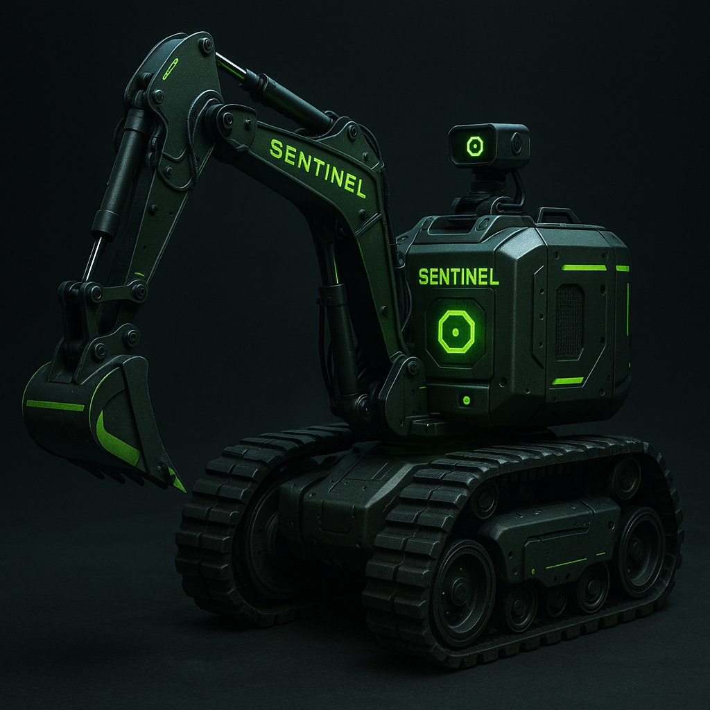

Multi-modal awareness
Stream computer vision, acoustic analysis, thermal sensing, and access telemetry through a unified inference engine tuned to your operating profile.
Ioncore synchronizes multi-modal sensing, AI decisioning, and verifiable telemetry into one adaptive grid. Each node becomes a self-aware sentry that coordinates facilities, fleets, and critical infrastructure with unwavering uptime.

The Integrated Intelligent Node System fuses perception and control into a modular command fabric. From perimeter defense to hospitality automation, nodes work in concert while maintaining independent resilience.
Stream computer vision, acoustic analysis, thermal sensing, and access telemetry through a unified inference engine tuned to your operating profile.
AI routines continuously learn from operator feedback, adjusting playbooks for escorts, inspections, concierge requests, or mission alerts in real time.
Zero-trust identity, hardware attestation, and quantum-ready encryption keep every node, feed, and command verifiable.
Curated dashboards surface heatmaps, anomaly trails, and predictive maintenance insights to inform executive decisions instantly.
Ioncore nodes operate in collaborative tiers that preserve command integrity even under duress. Each layer is designed to isolate risks while amplifying insights.
GPU-accelerated nodes process detections locally, securing low latency for access decisions, unmanned logistics, and perimeter sweeps.
Federated learning loops synchronize models across estates, preserving data privacy while hardening anomaly detection worldwide.
Every event is notarized on Ioncore's private ledger, delivering immutable compliance trails for auditors, insurers, and regulators.
Select modular packages or commission bespoke arrays to extend intelligence across indoor, outdoor, and mobile operations.
Deploy thermal, LiDAR, and PTZ vision with autonomous patrols that integrate seamlessly with guard forces and drone fleets.
Serve high-net-worth residences and resorts with voice concierge, robotics integration, and predictive amenity scheduling.
Instrument factories and ports with multi-sensor safety envelopes, emergency coordination, and compliance automation.
Ruggedized kits for vehicles, vessels, and field teams maintain encrypted connectivity and synchronized mission data.
From vision workshops to ongoing command oversight, our team ensures your node ecosystem adapts with each new challenge.
Immersive workshops capture objectives, risk thresholds, and service-level agreements across stakeholders.
Digital twins model sensor layouts, coverage overlap, and automation flows to validate throughput before ground work begins.
Ioncore field engineers install, calibrate, and secure each node while integrating with your legacy systems.
Joint readiness testing tunes AI scenarios, compliance policies, and executive dashboards.
24/7 remote operations center monitors telemetry, orchestrates updates, and coordinates rapid response playbooks.
Request a private strategy session to explore integration paths, deployment timelines, and tailored investment models.